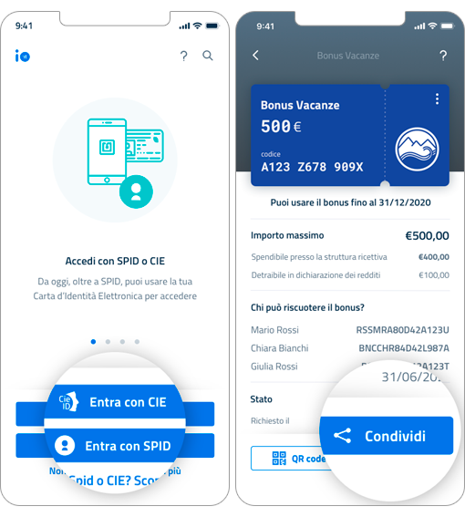

Bonus Vacanze prorogato al 31 dicembre 2021. Come funziona e come richiederlo
Bonus vacanza. Prorogato fino al 31 dicembre 2021
Il bonus mantiene il valore massimo di 500 euro. Chi l’ha richiesto dall'1 luglio al 31 dicembre 2020 potrà utilizzarlo fino al 31 dicembre 2021. Chi non l’avesse, invece, ancora richiesto, potrà farlo fino al 31 dicembre 2020.
Il Decreto Ristori del 28 ottobre 2020 ne ha prorogato la validità fino al 30 giugno 2021. Infine, dall’iter di conversione in legge del Decreto Milleproroghe viene la proroga dell’utilizzo fino al 31 dicembre 2021. Quindi, chi ha richiesto il bonus entro il 31 dicembre 2020 e non ne ha usufruito finora, potrà spenderlo nelle strutture ricettive italiane fino al 31 dicembre 2021.
Novità 2021-2022
Il Ministro del Turismo Massimo Garavaglia ha inserito alcune modifiche al bonus vacanza in un emendamento al Decreto Sostegni, ancora in via di approvazione.
Le novità principali riguarderanno:
1. Validità del bonus: il bonus vacanza sarà prorogato fino a giugno 2022
2. Cessione del bonus: si potrà cedere il bonus alle agenzie di viaggio presso cui si prenota e si paga il soggiorno
3. Utilizzo del bonus in più volte: sarà possibile usare il bonus vacanze in più volte e, quindi, anche in strutture diverse.
Specifichiamo che queste misure devono ancora essere approvate dal Parlamento, pertanto non sono ancora ufficiali nè operative. Quando diventeranno effettive ne daremo notizia su questa pagina.
Visita gli hotel che aderiscono al bonus vacanze in Riviera Romagnola
Riviera Romagnola
Rimini
Riccione
Milano Marittima
Cervia
Bellaria
Cesenatico
Cattolica
Misano Adriatico
Gabicce Mare
Lidi di Ravenna
Pesaro
Cos’è il bonus vacanze?
La tax credit vacanze o bonus vacanze 2020 è un contributo economico per le famiglie che trascorrono le vacanze in Italia. Ha un valore massimo di 500 € e può essere utilizzato fino al 31 dicembre 2021, purchè il bonus sia stato richiesto entro il 31 dicembre 2020.
Chi può richiederlo?
Tutte le famiglie con ISEE inferiore a 40.000 euro. Il bonus vacanze può essere richiesto da un solo componente per nucleo familiare.
Quanto vale?
L’importo del bonus varia in base al numero di componenti del nucleo familiare, fino a un massimo di 500€:
3 o più persone: 500€
2 persone: 300€
1 persona: 150€
Il valore del bonus non dipende dal numero di persone che usufruiscono della vacanza.
Cosa serve per richiederlo?
Certificazione ISEE ordinaria (o corrente) inferiore a 40.000 euro e identità digitale SPID oppure Carta d’Identità Elettronica (CIE 3.0) per accedere ai servizi online della Pubblica Amministrazione.
Come si richiede il bonus?
Il bonus si richiede solo in formato digitale tramite l'app IO. Una volta in possesso di ISEE in corso di validità e di identità SPID o Carta di Identità digitale, scarica l’app per smartphone IO e segui la procedura di richiesta.
Quando si può usare il bonus vacanze?
Inizialmente il bonus si poteva utilizzare dal 1 luglio al 31 dicembre 2020, ma il Decreto Ristori del 28 ottobre ha prorogato l’utilizzo fino al 30 giugno 2021. Infine, il Decreto Milleproroghe ne ha prorogato l’utilizzo fino al 31 dicembre 2021. Sarà possibile, quindi, per chi ha richiesto il bonus entro il 31 dicembre 2020, utilizzarlo fino al 31 dicembre 2021.
Come si usa?
Il bonus viene erogato esclusivamente in formato digitale e deve essere speso al momento del pagamento in hotel. L’80% del valore del bonus si ottiene come sconto sull’importo dovuto, il restante 20% viene recuperato come detrazione d’imposta nella dichiarazione dei redditi 2021. La detrazione del 20% è possibile anche se il fornitore del servizio non accorda lo sconto purché la fattura, documento commerciale, scontrino/ricevuta fiscale sia intestata alla persona che richiede la detrazione.
Ci sono limitazioni quando prenoto?
Il bonus può essere richiesto da un solo componente per nucleo familiare. La prenotazione deve essere diretta oppure realizzata tramite agenzie di viaggio e tour operator.
Sono valide le prenotazioni effettuate tramite info-alberghi.com, portale che mette in contatto diretto gli hotel con gli utenti web. Sono esclusi tutti i portali di prenotazione online con transazione.
LEGGI LA GUIDA ALL’UTILIZZO DELL’AGENZIA DELLE ENTRATE
LEGGI IL TESTO COMPLETO DEL DECRETO (19 Maggio 2020)
LEGGI L’AGGIORNAMENTO: CIRCOLARE N.18/E del 3 luglio 2020
IO - l’app per richiedere il bonus vacanze
Per richiedere il bonus vacanze occorre installare sullo smartphone IO - l’app dei servizi pubblici - e accedere attraverso identità digitale SPID o Carta di identità elettronica (CIE 3.0).
La richiesta può essere inoltrata a partire dal 1 luglio e fino al 31 dicembre 2020.
Come funziona l’app IO
1. Prima di accedere ottieni l’ISEE
Per richiedere il Bonus Vacanze devi avere un ISEE valido (ordinario o corrente).
2. Accedi con SPID
Per accedere all’app inserisci le tue credenziali SPID (o CIE).
3. Richiedi il bonus
Vai nella sezione Pagamenti. Clicca su bonus e scegli “Bonus Vacanze” dalla lista di quelli disponibili.
Segui i passaggi e completa la richiesta.
4. Ottieni subito il responso
L’app verifica subito i requisiti e può dare queste risposte:
- Richiesta valida:
compare l’importo del bonus e il nome dei familiari che possono utilizzarlo. - Richiesta valida ma bonus già attivato sullo stesso nucleo familiare:
- bonus già richiesto da un altro familiare.
- Richiesta valida, DSU con omissioni o difformità:
requisiti validi, si può procedere con la richiesta, sarà poi necessario presentare la documentazione completa relativa alla DSU. - Soglia ISEE superata:
con ISEE superiore a 40mila euro non è possibile inviare la richiesta - DSU assente:
non è possibile inviare la richiesta.
5. Ricevi il bonus sotto forma di QR CODE
In caso di risposta positiva, il sistema genera un codice univoco e un QR code associati al bonus (leggibile direttamente dallo schermo del telefono). Al momento di pagare il soggiorno presso la struttura ricettiva basterà comunicare il codice univoco e il codice fiscale di chi ha richiesto il bonus.
Vuoi maggiori informazioni? Leggi la guida completa dell’Agenzia delle Entrate.
Sei una struttura ricettiva? Ecco come usare il Bonus Vacanze
- Come accettare il bonus in hotel
- Vai sul sito dell’Agenzia delle Entrate ed entra nell’area riservata
- Segui il percorso “Servizi per” → “Comunicare” → “Bonus vacanze”
- Inserisci: codice univoco o QR code fornito dal cliente, codice fiscale e totale da pagare
Il sistema verifica la validità del bonus e indica lo sconto da applicare
Nota: se la gestione è una ditta individuale è sufficiente il codice SPID del titolare. Se è una società, si deve collegare nel profilo utente del legale rappresentante il codice fiscale della società.
- Come recuperare lo sconto
Hai due modi per recuperare lo sconto: il credito d’imposta e la cessione ai fornitori.
CREDITO DI IMPOSTA
Il bonus si può usare in compensazione tramite modello F24 utilizzando il codice tributo “6915” per il pagamento di ritenute alla fonte, Iva, contributi Inps, premi Inail, imposte sui redditi e Irap, Imu, tassa rifiuti e altri tributi locali.
CESSIONE A FORNITORI
Il bonus si può cedere a fornitori di beni e servizi, istituti di credito e intermediari finanziari, comunicandolo attraverso l’area riservata dell’Agenzia delle Entrate.